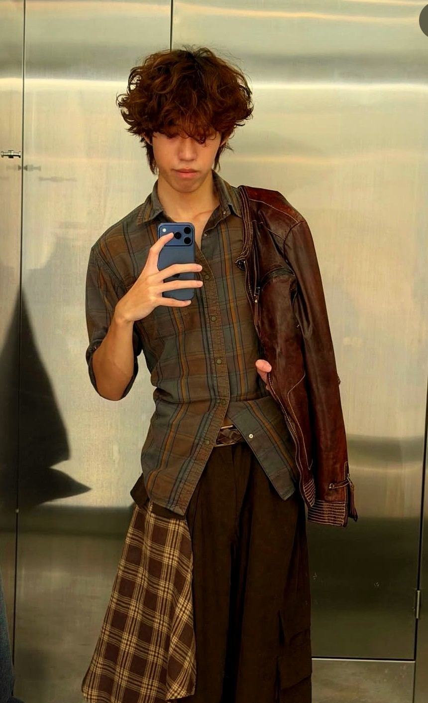
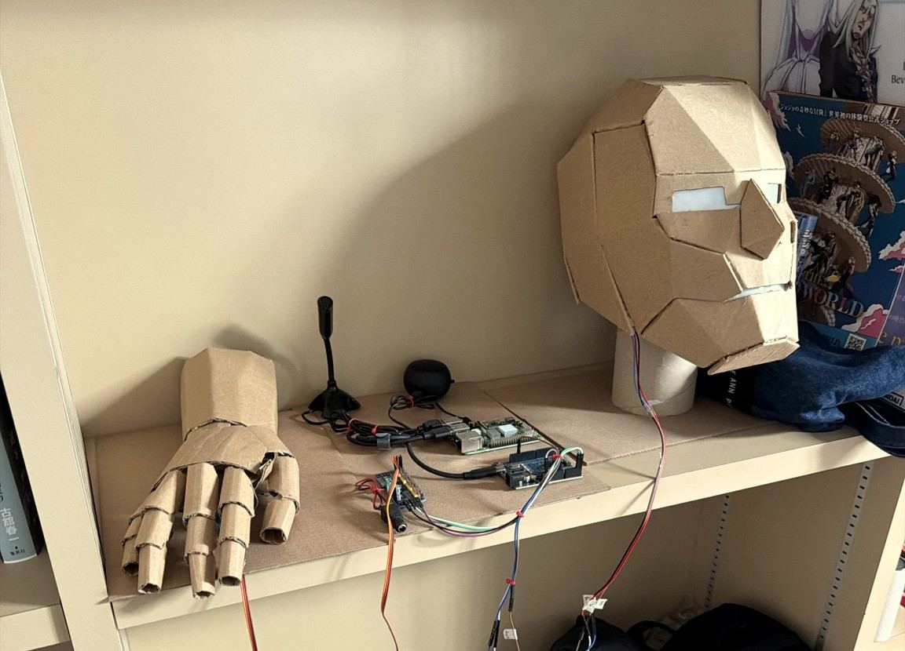

Fashion Interest
I enjoy exploring outfits that feel different from the usual basic styles.
I am a Year 1 student with interests in technology, design and fashion. This website connects my personal style with the idea of making more thoughtful clothing choices.
Read My Journey
I chose sustainable fashion because I am already interested in clothing and style. I often like brown and neutral tones in my outfits, so the website's earthy design also connects to my own visual style.
I enjoy exploring outfits that feel different from the usual basic styles.
Thrift stores appeal to me because they often have more unique pieces.
Unused clothes can still be passed to family members instead of being wasted.

One sustainability-related experience I had was building a robot with its outer structure made from cardboard. This showed me that reused materials can still be useful and creative when designing something practical.
Although this is not directly about fashion, it connects to the same idea of repurposing materials instead of wasting them.
A more sustainable future does not have to mean giving up style. It can mean choosing better, wasting less and being more aware of what we already own.
Understand how fashion affects waste and the environment.
Use clothes longer and pass them on when they are still wearable.
Buy clothes more intentionally instead of buying for no reason.
Encourage small actions that others can realistically follow.